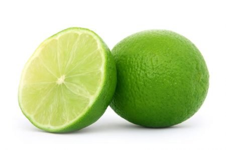

Belonging to the botanical family Rutaceae, acid lime (Citrus Aurantifolia Swing) is one of the largest growing and ever-demanding citrus groups of fruits cultivated in India. Among the major contributing states that produce acid lime include Andhra Pradesh, Maharashtra, Tamil Nadu, Gujarat, Rajasthan, Bihar, as well as extensive areas of North East India like Arunachal Pradesh. It is one of the four demanding citrus fruits grown commercially in India. Apart from used extensively as fresh fruits, it has great demand in preparation of pickles, food products, and beverages. Enriched in Vitamin C, salts and an array of minerals it offers numerous health benefits like
Acid limes grow well in tropical and subtropical, arid or semi-arid climatic condition which is a great plus point for cultivators across India to farm the evergreen citrus fruit. Frosty weather is harming for acid lime, while farmers should be caring in the summer days to protect their plants from hot winds that leads to dryness and drop of flowers.
The citrus plant can be grown in a wide variety of soil types ranging from alluvial or sandy loam, medium black to clay loam and laterite or acidic soils. Well drainage of the field is an essential condition for its effective growth. Make sure that the pH in soil is within the range of 5.5 to 7.5 which is best fitted for them even if they grow in areas with pH ranging from 4.0 to 9.0.
Four major varieties of acid lime grown in India in abundance and have high market demand include Vikram, PKM, Prumalini and Rashraj or Sharbati. Some of the common types of lemons are Assam lemon, Pant lemon, Galgal, Italian lemon and Malta Lemon. Kagzi lime is also another kind of acid lime which is famous for its great aromatic taste.
PropagationThe plant can be propagated by seed, air layering, and budding. The specie is poly-embryonic and propagation through seedlings is highly recommended. Choose disease-free mother plants while planting through layering. It is recommended to prepare nursery beds in HDPE trays available in the market with fertile soil for effective growth of seedlings under a shade. For higher productivity, selection of nucellar seedlings by elimination of weak seedlings is a great ideal. Since seedlings should be planted only after they attain a height about 30-40 cm, you will be required to develop a secondary nursery bed. Watering plants in gap of 2-3 days in nursery stage is ideal, however, be careful to avoid over watering that causes root decay and dying of seedlings.
Land required to be well-ploughed to full tilth and leveled, while in hilly areas plantation should be carried out on terraces based on the slopes, as found widespread. In hilly regions, planting in high density is possible with more aeration space opposed to flat lands. Given that acid lime plants are extremely vulnerable to water stagnation in rainy season, proper drainage system both in the hills and plains are essential criterion.
Most ideal season of planting is June-August. Dig pits measuring 1m x 1m x 1m for plantation of seedlings. Use FYM @15-20 kg, super phosphate@500 g per pits before planning.
Standard spacing for limes and lemons (Citrus Aurantifolia Swingle & Citrus Lemon) is 6 x 6 m and 5 x 5 m respectively. Consider density of 275 for limes and 400 for lemons per hectare.
IrrigationAlways go for light irrigation whereas maintaining higher frequency is highly beneficial for plant growth, especially during the initial stage. Water must not contain salts above 1000 PPM which is injurious for Citrus plants. Water flooding should be avoided to save plants from potential root and collar decay. Depending on the soil texture and rainfall condition, frequency of irrigation and amount of watering should be determined. Bearing plants require nourishing with watering at 10-15 days interval in dry days while maintaining a gap of 15-20 days in winter is ideal.Micro irrigation or deep irrigation system is a steady step to conserve water as well as watering plants with needed water and nutrients.
| Type | 1st Year | Annual Increment up to 5th Year | From 6th Year Onward |
|---|---|---|---|
| FYM | 10-12 kg | 5 kg | 30-35 kg |
| N | 200-250 g | 100 g | 600-800 g |
| P | 100-125 g | 25 g | 200-250 g |
| K | 100-125 g | 40 g | 300-375 g |
In order to grow healthy, juicy and superior class of fruits set, consider spraying 2,4 – D@ 20 PPM during flowering phase, spray 2, 4 D @ 20 PPM for fruit retention and NAA@ 30 PPM for best fruit set.
Training and PruningWith a view to let the plants grow with a solid stem, shoots that grow up to 30-40 cm. from the land level needs to be discarded. Support the main stem with bamboo stick that helps them stand erect during high winds or downpour. Make sure that branches are evenly distributed (as per as practicable) to both sides and remove cross twigs or water suckers in early stage. Diseased, drooping, or injured branches should be eliminated on periodical basis, whereas for bearing plants no pruning is recommended.
Plant ProtectionSpray the plants with Quinalphos25-EC @ 2ml/lit water to control the pest attack. Take step at the very beginning to avoid severity. The larvae can be destroyed just by eliminating them from plants.
Leaf MinerUse foliar spray like Quinalphos 1.25 ml or monocrotophos 1.0 ml/litre or fenvalerate 0.5 ml/ lit of water in 7 days interval and continue till infestation is completely controlled.
Citrus ThripsUse foliar spray Monocrotophos 1 ml/litre of water or dimethoate@ 2 ml over the leaves, buds, and berries.
Citrus PsyllaUsually infestation is found during Feb and Mar, June July and Oct-Nov. Have an eye and if noticed, consider using foliar spray like acephate 1.0 g or quinalphos 1.0 ml. Stop spraying once invasion is no more.
Sucking PestsSpraying of dimethoate 250 ml kerosene oil in 150 ltr of water in combination of parathion (0.03%) or carbaryl @ 0.05% plus oil 1 % or malathion @ 0.1 % will give result.
Trunk BorerRinse the tunnels with either with carbaryl (1%)/ or monocrotophos (0.02%) or dichlorvos (0.1%) for fast result
Citrus GreeningEliminate branches that are infected and then apply Ledermycin 600 PPM together with FeSO4 and ZnSO4 through spraying.
Citrus CankerElimination of infected twigs and then spraying plants with 1 % Bordeaux mixed with copper fungicide works brilliant. Also, consider spraying foliar application with streptomycin sulphate 100 ppm found effective.
Fruit FlyFor effective control, use sprays like or Fenthion/100EC@ 1 ml/lit or Malathion/50EC@ 1 ml/lit water mixed with crude sugar@1% 10 gr/liter and apply. Another steady method widely followed is – using fish meal trap poly bags containing 5-8 g of soaked fish meal (should be changed once in 20 days) as well as Dichlorvas@1 ml in cotton (should be changed once in 7 days). For hectare land 50 traps need to be placed all over the garden and procedure should continue until the pests are not fully eliminated.
Mealy BugsAnother scary issue which needs to be handled with great care to save your valuable crops. First of all, eliminate the branches where you find infestation and then apply methyl parathion paste. Consider using Dichlorvos @ 0.2% included with fish oil resin soap @25g/lit and dip the fruits for 2/3 minutes or simply spray well over the leaves, flowers, and fruits.
HarvestingIn general, maturity of acid lime depends largely on certain factors including nutrition, farming techniques, climatic condition, moisture availability etc. Plants start bearing fruits from 2½ – 3 years after planting. Among all citrus groups of fruits, acid lime takes a shorter maturity period of 5-6 months. If you’re a grower of lemon, it’s ideal to carry on harvesting from time to time after evaluation of the ripening stage of fruits, given that they should be harvested only upon changing their colors to complete yellow. In India, harvesting period for acid lime includes two seasons i.e. from July-September and Nov-Jan.
YieldMore or less 25-30 tons/ hectare annually.
References: